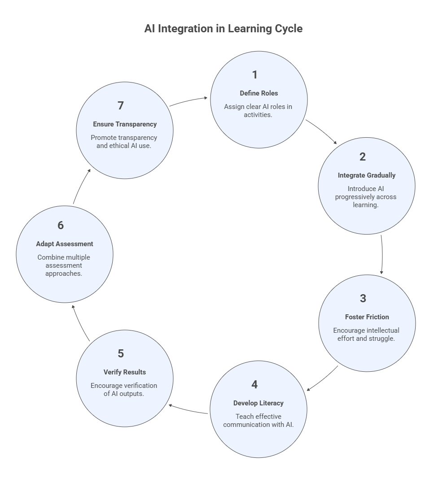

0. Pedagogical Foundations for Teaching with AI#
Artificial Intelligence is rapidly transforming how knowledge is created, accessed, and applied. In education, this transformation requires more than simply adopting new tools, it requires rethinking how learning is designed, guided, and assessed.
This module introduces the pedagogical foundations for Teaching with AI, providing the conceptual grounding for the rest of the course. While later modules focus on the operational workflow of teaching with AI, this module establishes the principles that guide AI‑augmented learning.
The central idea is that effective Teaching with AI rests on two complementary pillars:
Pedagogical Integration, aligning AI use with learning outcomes, instructional design, and assessment.
Instrumental Augmentation, using AI tools to enhance planning, teaching, feedback, and reflection.
Module 0 focuses on the first pillar: Pedagogical Integration. It presents the key principles that ensure AI strengthens learning rather than replace it.
Learning Objectives#
After completing this module, participants will be able to:
Explain why AI requires new pedagogical approaches in higher education.
Define the concept of AI‑Augmented Learning.
Understand the seven pedagogical principles that guide the integration of AI in teaching.
Recognize how these principles connect to the instructional workflow presented in the following modules.
0.1 Why AI Changes Learning#
Generative AI systems can now perform tasks that traditionally required significant cognitive effort, including:
summarizing complex material
generating explanations
producing code
drafting essays
analyzing data
Because these systems can perform tasks associated with knowledge production, they change the learning environment in fundamental ways.
In traditional education, instructors could assume that most intellectual work performed by students reflected their own reasoning. With AI systems available, this assumption no longer holds.
As a result, educators must redesign learning experiences to ensure that students:
develop conceptual understanding
practice reasoning and judgment
learn how to work responsibly with intelligent systems
Teaching with AI therefore requires intentional pedagogical design, not simply tool adoption.
Example: Literature Course#
Students traditionally write essays analyzing literary themes. With AI available, students could easily generate an essay draft in seconds. Instead of banning AI, the instructor redesigns the activity:
Students analyze a passage and write an initial interpretation without AI.
Students ask an AI system for an alternative interpretation.
Students compare the two analyses.
Students write a reflection explaining which interpretation is stronger and why, and how they could be merged into an even better essay.
Learning now focuses on critical reasoning rather than text generation.
Exercise 1: Rethinking a Learning Activity#
Choose a learning activity you currently use in your course.
Describe the activity.
Identify how students might use AI to complete the task.
Redesign the activity so that AI supports thinking rather than replacing it.
Write a short paragraph describing your redesigned activity.
0.2 AI‑Augmented Learning#
The concept of AI‑Augmented Learning refers to educational experiences in which:
students interact with AI tools
instructors design activities that incorporate AI
learning remains centered on human reasoning and understanding
In AI‑augmented learning environments:
AI can support exploration and explanation
AI can accelerate routine tasks
AI can help students test ideas
However, students remain responsible for understanding, evaluating, and refining the outputs produced by AI systems.
The goal is not to replace thinking with AI, but to help students learn how to think in an AI‑enabled world.
Example: Data Analysis Course#
Students are asked to analyze a dataset. Instead of manually writing code from scratch, students may ask AI to generate initial code or even perform the whole analysis for them.
However, the assignment requires students to:
explain the analysis method
validate the results
interpret the findings
critique the AI‑generated code
The focus shifts from code generation to analytical reasoning.
Exercise 2: AI as a Thinking Partner#
Ask an AI system the following prompt:
Explain the concept of feedback loops in learning.
Then:
Evaluate the explanation.
Identify at least two strengths.
Identify two possible weaknesses or limitations.
Write an improved explanation.
0.3 The Seven Pedagogical Principles#
Teaching with AI is guided by seven pedagogical principles that help instructors design meaningful and responsible learning experiences.
These principles are not rigid rules; instead, they serve as design guidelines for integrating AI into teaching.

Principle 1: Intentional Role Definition#
AI should be assigned a clear role within learning activities. Possible roles include:
tutor
brainstorming partner
coding assistant
writing assistant
simulation engine
Students should understand:
what AI is allowed to do
what the student must do independently
how AI outputs should be used
Clear role definition helps prevent confusion about authorship, responsibility, and learning expectations.
Example
In a design course, AI acts as a brainstorming partner while students produce the final design and justify their decisions.
Exercise 3
Complete the statement:
In this activity, AI will function as a __________ while students remain responsible for __________.
Principle 2: Progressive Integration#
AI should be introduced gradually across the learning process. A common progression may include:
Foundation Stage Students learn core concepts and skills with limited or no AI assistance.
Applied Stage Students begin using AI tools to support problem solving and exploration.
Extended Stage Students learn to critically evaluate and refine AI‑generated outputs.
This progression ensures that AI supports skill development rather than replacing it.
Example
Statistics course:
Foundation: students compute regression manually.
Applied: students use AI to generate regression code.
Extended: students evaluate whether the AI method was appropriate.
Exercise 4
Stage |
Student Activity |
AI Role |
|---|---|---|
Foundation |
||
Applied |
||
Extended |
Principle 3: Productive Friction#
Learning often requires intellectual effort and struggle. If AI removes all difficulty from a task, students may lose opportunities to develop understanding.
Productive friction means designing activities where students must:
analyze AI responses
detect errors
refine prompts
justify decisions
In this way, AI becomes a thinking partner rather than an answer generator.
Example
Students analyze an AI-generated solution containing a deliberate error and must identify and correct it.
Exercise 5: Productive friction
Prompt an AI system to solve a problem in your field and identify at least one possible flaw in the response.
Principle 4: Prompt Literacy#
Students must learn how to communicate effectively with AI systems. Prompt literacy includes:
formulating clear instructions
refining prompts iteratively
interpreting AI responses
recognizing limitations of AI models
Prompt literacy is becoming an important digital reasoning skill for the AI era.
Exercise 6: Iterative prompt improvement
Iteratively improve a prompt three times and compare the responses.
Principle 5: Verification‑First Learning#
AI systems can produce convincing but incorrect outputs.
Students must learn to verify AI results using:
evidence
reasoning
external sources
domain knowledge
Verification‑first learning encourages students to treat AI outputs as hypotheses rather than final answers.
Exercise 7: Verification-first learning
Ask AI a question in your field and verify the answer using two independent sources.
Principle 6: Hybrid Assessment#
Assessment strategies must adapt to AI‑enabled environments.
Hybrid assessment combines multiple approaches, such as:
AI‑assisted assignments
AI‑restricted activities
in‑class demonstrations of reasoning
iterative project development
reflective explanations of work
This approach allows instructors to evaluate both process and understanding, not only final products.
Exercise 8
Design a hybrid assessment strategy for one assignment in your course.
Note: This will be explored further in Module 4 about assignment design.
Principle 7: Transparency, Ethics, and Accountability#
Students should be transparent about their use of AI. Courses should clearly communicate:
when AI use is allowed
when it is restricted
how AI contributions should be acknowledged
Ethical AI use also includes:
respecting academic integrity
protecting data privacy
recognizing limitations and biases in AI systems
Responsible AI use is an essential component of professional practice in the AI era.
Exercise 9
Write a short AI usage statement policy for your course.
Note: This will be explored further in Module 2 about pedagogical planning.
0.4 Connecting Principles to the Teaching Workflow#
The pedagogical principles introduced in this module guide the instructional practices explored in the rest of the course.
The following modules examine how AI can support different stages of the teaching process:
Module |
Focus |
|---|---|
Module 1 |
Instrumental Augmentation Process |
Module 2 |
Pedagogical Planning |
Module 3 |
Class Design |
Module 4 |
Assignment Design |
Module 5 |
Class Delivery |
Module 6 |
Student Support |
Module 7 |
Assessment and Feedback |
Module 8 |
Reflection and Continuous Improvement |
In each stage of the workflow, instructors apply the principles introduced in this module to ensure that AI use enhances learning while maintaining academic rigor and responsibility.
0.5 Key Takeaways#
Teaching with AI requires both pedagogical integration and instrumental augmentation.
AI‑augmented learning places human reasoning at the center of the educational experience.
The seven pedagogical principles help instructors design meaningful AI‑supported learning activities.
These principles guide the practical teaching strategies explored in the rest of the course.
0.6 Reflection#
Before proceeding to the operational modules of this course, take a moment to reflect on how the pedagogical principles presented in this module relate to your current teaching practices. Consider the following questions:
Current Practice
Which of the seven pedagogical principles do you already apply, either intentionally or implicitly, in your teaching?AI Integration Readiness
In your discipline, which types of learning activities could benefit most from AI-augmented learning?Challenges and Risks
What potential risks do you foresee when students use AI tools in your course (e.g., overreliance, reduced effort, misinformation)?Design Opportunities
How might you redesign one existing activity in your course to incorporate the principles of:productive friction
verification-first learning
hybrid assessment
Instructor Role
How might the role of the instructor change in AI-augmented learning environments?
Write a short reflection (1–2 paragraphs) summarizing how the pedagogical principles introduced in this module may influence the design of your course.
Note: Throughout Modules 1–8 you will revisit these ideas and translate them into concrete teaching practices.
📘 Further Reading#
Holmes, W., Bialik, M., & Fadel, C. (2019). Artificial Intelligence in Education: Promises and Implications for Teaching and Learning. Boston: Center for Curriculum Redesign.
Luckin, R. (2018). Machine Learning and Human Intelligence: The Future of Education for the 21st Century. UCL Institute of Education Press.
Mollick, E., & Mollick, L. (2023). Assigning AI: Seven Approaches for Students with ChatGPT. The Wharton School Research Paper SSRN. https://papers.ssrn.com/sol3/papers.cfm?abstract_id=4475995#
Kasneci, E., et al. (2023). ChatGPT for Good? On Opportunities and Challenges of Large Language Models for Education. Learning and Individual Differences, 103, 102274, https://doi.org/10.1016/j.lindif.2023.102274.
Biggs, J., & Tang, C. (2011). Teaching for Quality Learning at University., Open UNiversity Press.
Ambrose, S., et al. (2010). How Learning Works: Seven Research-Based Principles for Smart Teaching., Jossey-Bass.